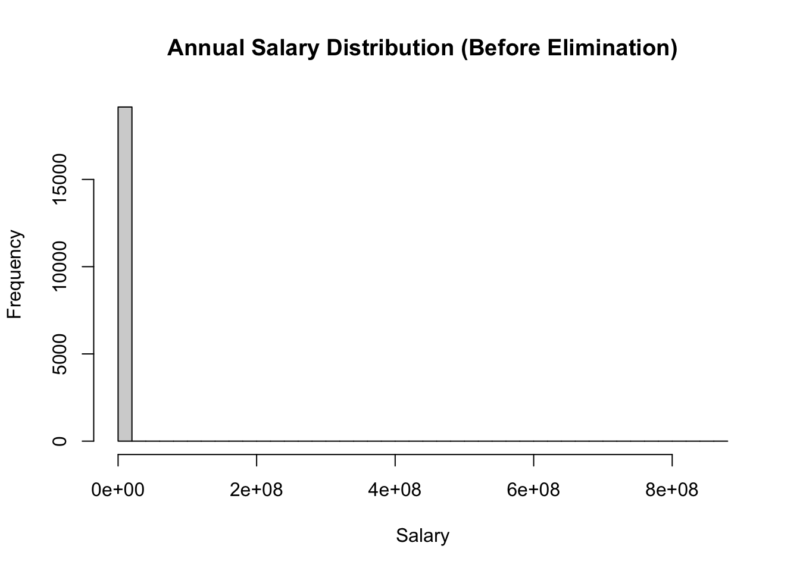
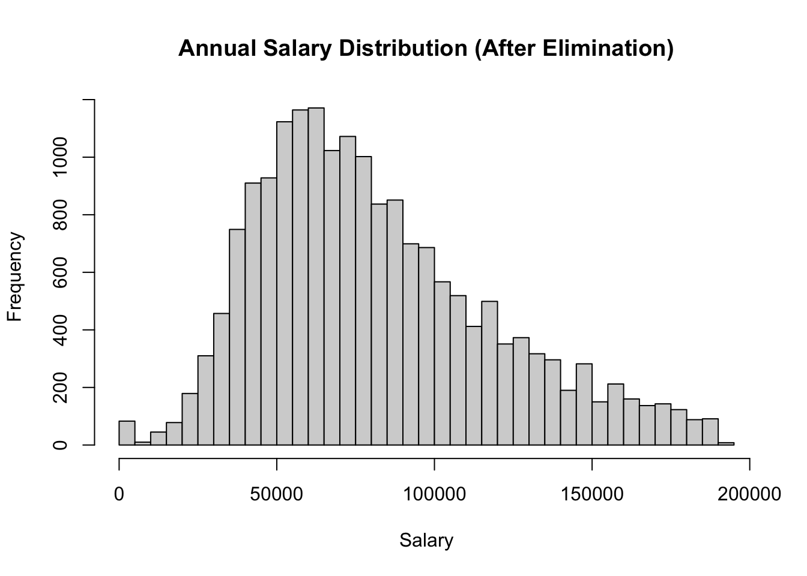

setwd("~/Documents/GitHub/STATS506")
data <- read.csv("wine.data",header = FALSE)
colnames(data) <- c("Class","Alcohol","Malic Acid","Ash","Alcalinity of ash",
"Magnesium","Total phenols","Flavanoids","Nonflavanoid phenols",
"Proanthocyanins","Color intensity","Hue","OD280/OD315 of diluted wines",
"Proline")
wine_data = data.frame(data)
#wine_dataProblemSet1
Homework 1
problem 1 - Wine Data
a. Import the data into a data.frame in R. Use the information in the “wine.names” file to give appropriate column names. (Note: Downloading and unzipping the file can take place outside of your submitted document, but importing the file should be in the submission.)
b. The data contains information on three different classes of wine. Check and report that the number of wines within each class is correct as reported in “wine.names”.
class_counts <- table(wine_data$Class)
class_counts
1 2 3
59 71 48 The number of wines within each class is correct as reported in “wine.names”.
c1. What is the correlation between alcohol content and color intensity?
correlation = cor(wine_data$Alcohol, wine_data$Color.intensity)
correlation[1] 0.5463642The correlation between alcohol content and color intensity is 0.5463642.
c2. Which class has the highest correlation? Which has the lowest?
library(dplyr)
Attaching package: 'dplyr'The following objects are masked from 'package:stats':
filter, lagThe following objects are masked from 'package:base':
intersect, setdiff, setequal, unioncorrelations <- wine_data %>% ## pass through the data set
group_by(Class) %>% ## group by class
summarize(correlation = cor(Alcohol, Color.intensity))
## Create new variable called "correlation" and assign it with its corresponding values
correlations# A tibble: 3 × 2
Class correlation
<int> <dbl>
1 1 0.408
2 2 0.270
3 3 0.350According to the output after using ‘dplyr’ to manipulate the data set, we can see that: Class 1 has the highest correlation of 0.4082913, and class 2 has the lowest correlation of 0.2697891 between alcohol content and color intensity.
c3. What is the alcohol content of the wine with the highest color intensity?
# First get the row index of the highest color intensity
index <- which.max(wine_data$Color.intensity)
# Then get the alcohol content of the wine with the highest color intensity
alcohol <- wine_data$Alcohol[index]
alcohol[1] 14.34The alcohol content of the wine with the highest color intensity is 14.34.
c4. What percentage of wines had a higher content of proanthocyanins compare to ash?
percentage <- wine_data %>%
mutate(higher = Proanthocyanins > Ash) %>%
# Create a new column using mutate command which returns TRUE if greater, FALSE if not
summarize(percentage = mean(higher) * 100) # Calculate the percentage
percentage percentage
1 8.426966According to the output, 8.426966% of wines had a higher content of proanthocyanins compare to ash.
d. Create a table identifying the average value of each variable, providing one row for the overall average, and one row per class with class averages. (This table does not need to be “fancy” but should clearly identify what each value represents.)
overall_avg <- colMeans(wine_data[,-1])
class_avg <- aggregate(. ~ Class, data = wine_data, FUN = mean)
# Add a row for overall average to the class averages table
table <- rbind(class_avg, c("Overall Average", overall_avg))
table Class Alcohol Malic.Acid Ash
1 1 13.7447457627119 2.01067796610169 2.45559322033898
2 2 12.2787323943662 1.93267605633803 2.24478873239437
3 3 13.15375 3.33375 2.43708333333333
4 Overall Average 13.0006179775281 2.33634831460674 2.36651685393258
Alcalinity.of.ash Magnesium Total.phenols Flavanoids
1 17.0372881355932 106.338983050847 2.84016949152542 2.98237288135593
2 20.2380281690141 94.5492957746479 2.25887323943662 2.08084507042254
3 21.4166666666667 99.3125 1.67875 0.781458333333333
4 19.4949438202247 99.7415730337079 2.29511235955056 2.02926966292135
Nonflavanoid.phenols Proanthocyanins Color.intensity Hue
1 0.29 1.89932203389831 5.52830508474576 1.06203389830508
2 0.363661971830986 1.63028169014085 3.08661971830986 1.05628169014085
3 0.4475 1.15354166666667 7.39624997916667 0.682708333333333
4 0.36185393258427 1.59089887640449 5.05808988202247 0.957449438202247
OD280.OD315.of.diluted.wines Proline
1 3.15779661016949 1115.71186440678
2 2.78535211267606 519.507042253521
3 1.68354166666667 629.895833333333
4 2.61168539325843 746.893258426966e. Carry out a series of t-tests to examine whether the level of phenols differs across the three classes. Present the R output and interpret the results. (You may use an existing R function to carry out the t-test, or for minor extra credit, manually write your own calculation of the t-test p-values.)
# Separate data by class
class1 <- subset(wine_data, Class == 1)
class2 <- subset(wine_data, Class == 2)
class3 <- subset(wine_data, Class == 3)
# Perform t-tests to compare phenol levels across classes
t_test_1_2 <- t.test(class1$Total.phenols, class2$Total.phenols)
t_test_1_3 <- t.test(class1$Total.phenols, class3$Total.phenols)
t_test_2_3 <- t.test(class2$Total.phenols, class3$Total.phenols)
# Print the results
t_test_1_2
Welch Two Sample t-test
data: class1$Total.phenols and class2$Total.phenols
t = 7.4206, df = 119.14, p-value = 1.889e-11
alternative hypothesis: true difference in means is not equal to 0
95 percent confidence interval:
0.4261870 0.7364055
sample estimates:
mean of x mean of y
2.840169 2.258873 t_test_1_3
Welch Two Sample t-test
data: class1$Total.phenols and class3$Total.phenols
t = 17.12, df = 98.356, p-value < 2.2e-16
alternative hypothesis: true difference in means is not equal to 0
95 percent confidence interval:
1.026801 1.296038
sample estimates:
mean of x mean of y
2.840169 1.678750 t_test_2_3
Welch Two Sample t-test
data: class2$Total.phenols and class3$Total.phenols
t = 7.0125, df = 116.91, p-value = 1.622e-10
alternative hypothesis: true difference in means is not equal to 0
95 percent confidence interval:
0.4162855 0.7439610
sample estimates:
mean of x mean of y
2.258873 1.678750 Problem 2 - AskAManager.org Data
a. Import the data into a data.frame in R. As with the wine data, you may download the data outside of your submission, but importation should take place inside the problem set submission.
setwd("~/Documents/GitHub/STATS506")
manager_data <- read.csv("AskAManager.csv")b. Clean up the variable names. Simplify them.
data = manager_data[ ,-c(1,10)] ## Remove unused Cols
new_data <- data %>% ## Use dplyr package to rename the variables
rename(Age = How.old.are.you.,
Industry = What.industry.do.you.work.in.,
Job = Job.title,
Job_context = If.your.job.title.needs.additional.context..please.clarify.here.,
Annual_salary = What.is.your.annual.salary...You.ll.indicate.the.currency.in.a.later.question..If.you.are.part.time.or.hourly..please.enter.an.annualized.equivalent....what.you.would.earn.if.you.worked.the.job.40.hours.a.week..52.weeks.a.year..,
Bonus = How.much.additional.monetary.compensation.do.you.get..if.any..for.example..bonuses.or.overtime.in.an.average.year...Please.only.include.monetary.compensation.here..not.the.value.of.benefits.,
Currency = Please.indicate.the.currency,
Income_context = If.your.income.needs.additional.context..please.provide.it.here.,
Country = What.country.do.you.work.in.,
State = If.you.re.in.the.U.S...what.state.do.you.work.in.,
City = What.city.do.you.work.in.,
Overall_experience = How.many.years.of.professional.work.experience.do.you.have.overall.,
field_experience = How.many.years.of.professional.work.experience.do.you.have.in.your.field.,
Education = What.is.your.highest.level.of.education.completed.,
Gender = What.is.your.gender.,
Race = What.is.your.race...Choose.all.that.apply..)
#new_datac. Restrict the data to those being paid in US dollars (USD). Show that it worked by confirming the number of observations before and after restricting the data.
USD_data <- new_data %>%
filter(Currency == "USD") ## filter the data to only USD Currency
## Unrestricted
print("number of observations before restricting the data: ")[1] "number of observations before restricting the data: "nrow(new_data)[1] 28062## Restricted
print("number of observations after restricting the data: ")[1] "number of observations after restricting the data: "nrow(USD_data)[1] 23374d. Assume no one starts working before age 18. Eliminate any rows for which their age, years of experience in their field, and years of experience total are impossible. Again, confirm the number of observations. (Hint: Making these variables factor may make your life easier.)
# Extract lower bounds from the ranges
df <- new_data %>%
mutate(
Age_lower = as.numeric(gsub("[^0-9]", "",
sapply(strsplit(Age, "-"), `[`, 1))),
Field_exp_lower = as.numeric(gsub("[^0-9]", "",
sapply(strsplit(field_experience, "-"), `[`, 1))),
Overall_exp_lower = as.numeric(gsub("[^0-9]", "",
sapply(strsplit(Overall_experience, "-"), `[`, 1)))
)
### remove other characters in these three variables, but only leave the minimum number in each ### interval of years, and create 3 new cols in the data set for easier access/elimination.
filtered_df <- df %>%
filter(
Age_lower >= 18, ## Save, if lower bound of Age is greater than 18
Field_exp_lower <= (Age_lower - 18),
## Save, if lower bound of Field_exp_lower is less than or equal to the difference of the
## lower bound of Age and 18.
Overall_exp_lower <= (Age_lower - 18)
## Same concept here for Overall years of experience
)
print("number of observations before filtering the data: ")[1] "number of observations before filtering the data: "nrow(new_data)[1] 28062print("number of observations after filtering the data: ")[1] "number of observations after filtering the data: "nrow(filtered_df)[1] 19157e. A lot of the incomes are likely false. Eliminate any rows with extremely low or extremely high salaries. I’ll leave the decision of what thresholds to use up to you; you could choose to eliminate only impossible values, or you could restrict the sample to eliminate the extreme values even if they are realistic (e.g. removing the billionaires or the folks making < $1,000 per year). You must justify your choice, along with either a cited source or an exploration the data, or some combination.
Report your final sample size.
summary(filtered_df$Annual_salary) Min. 1st Qu. Median Mean 3rd Qu. Max.
0 55000 77250 164677 110000 870000000 # Histogram
hist(filtered_df$Annual_salary, main = "Annual Salary Distribution (Before Elimination)",
xlab = "Salary", breaks = 50)
# Calculate quartiles and IQR
Q1 <- quantile(filtered_df$Annual_salary, 0.25, na.rm = TRUE)
Q3 <- quantile(filtered_df$Annual_salary, 0.75, na.rm = TRUE)
IQR_salary <- Q3 - Q1
# Choose threshold
lower_bound <- Q1 - 1.5 * IQR_salary
upper_bound <- Q3 + 1.5 * IQR_salary
# Filter out outliers
new_df<- filtered_df %>%
filter(Annual_salary >= lower_bound & Annual_salary <= upper_bound)
hist(new_df$Annual_salary, main = "Annual Salary Distribution (After Elimination)",
xlab = "Salary", breaks = 50)
nrow(new_df)[1] 18295According to the website: https://machinelearningmastery.com/how-to-use-statistics-to-identify-outliers-in-data/, I learned that the IQR method identifies outliers based on the spread of the middle 50% of the data, and it’s particularly useful since it doesn’t rely on the assumption of normality and works well with skewed distributions. and the formula for determining the thresholds for potential outliers is:
lower bound: Q1 - 1.5 * IQR
upper bound: Q3 + 1.5 * IQR
Thus, using this method, we can see the above output and results for the number of observations.
f. (Optional) If you want to see this analysis through for no credit, answer the research question of whether there is a statistical association between education and salary, controlling for years of experience.
#### OPTIONAL ####Problem 3 - Palindromic Numbers
a. Write function isPalindromic that checks if a given positive integer is a palindrome. Be sure to provide a reasonable error on an invalid input. Be sure to document your function (see instructions above).
Input: A positive integer
Output: A list with two elements:
isPalindromic: A logical value indicating if the input is palindromic.reversed: The input with its digits reversed.
#' isPalindromic function
#'
#' Palindromic numbers are integers that are equal to the reverse of their digits.
#' Note that: all single-digit numbers are palindromic by themselves
#'
#' This function checks if a given positive integer is a palindrome, if the input is not a
#' positive integer, it will raise an error.
#'
#' @param number
#'
#' @return a list with two elements:
#' \item{isPalindromic}{A logical value indicating if the input is palindromic.(TRUE/FALSE)}
#' \item{reversed}{The input with its digits reversed.}
#'
#' @examples
#' isPalindromic(728827) # returns $isPalindromic [1] TRUE $reversed [1] 728827
#' isPalindromic(39951) # returns $isPalindromic [1] FALSE $reversed [1] 15993
#' @export
isPalindromic <- function(number){
if (!is.numeric(number) || number <= 0 || number != as.integer(number)) {
stop("Input must be a positive integer.")
} ## checks if the input is not a number or the number is less than or equal to 0
## or is the input number is not an integer, then it will stop and raise an error
# Convert the number to a string
str_number <- as.character(number) # in this way we can manipulate it
# Reverse the digits of the number
reversed_str <- paste(rev(unlist(strsplit(str_number, ""))), collapse = "")
# strsplit(str_number, "") - Splits the string into individual characters
# unlist() - change the list of characters into a vector
# rev(): reverses order
# paste(..., collapse = ""): Joins the reversed characters back into a single string
# Convert the reversed string back to a number
reversed_number <- as.integer(reversed_str)
# Check if the original number is equal to the reversed number
is_palindromic <- (number == reversed_number)
# Return the result as a list
return(list(isPalindromic = is_palindromic,
reversed = reversed_number))
}b. Create a function nextPalindrome that finds the next palindromic number strictly greater than the input. Be sure to provide a reasonable error on an invalid input.
Input: A positive integer
Output: A vector of length 1 with the next palindromic number greater than the input
#' nextPalindrome function
#'
#' This function finds the next palindromic number strictly greater than the input.
#' if the input is not a positive integer, it will raise an error.
#'
#' Note that: all single-digit numbers are palindromic by themselves
#' If the input starts with a leading zero, it will ignore it.
#'
#' @param number a positive integer
#'
#' @return A vector of length 1 with the next palindromic number greater than the input
#'
#'
#' @examples
#' nextPalindrome(7152) ## Returns: [1] 7227
#' nextPalindrome(765431537) ## Returns: [1] 765434567
#'
#'
#' @export
nextPalindrome <- function(number) {
if (!is.numeric(number) || number <= 0 || number != as.integer(number)) {
stop("Input must be a positive integer.")
} ## checks if the input is not a number or the number is less than or equal to 0
## or is the input number is not an integer, then it will stop and raise an error
# Start looking for the next palindromic number greater than the input
next_number <- number + 1 ## Initializes next_number to one greater than the input.
while (TRUE) { #continually check numbers starting from next_number
if (isPalindromic(next_number)$isPalindromic) {
# Use isPalindromic function written in part a to check if next_number is a palindrome
return(next_number)
}
next_number <- next_number + 1
## keep looping through until the next palindrome is found
}
}c. Use these functions to find the next palindrome for each of the following:
391
9928
19272719
109
2
# (i)
nextPalindrome(391)[1] 393# (ii)
nextPalindrome(9928)[1] 9999# (iii)
nextPalindrome(19272719)[1] 19277291# (iv)
nextPalindrome(109)[1] 111# (v)
nextPalindrome(2)[1] 3